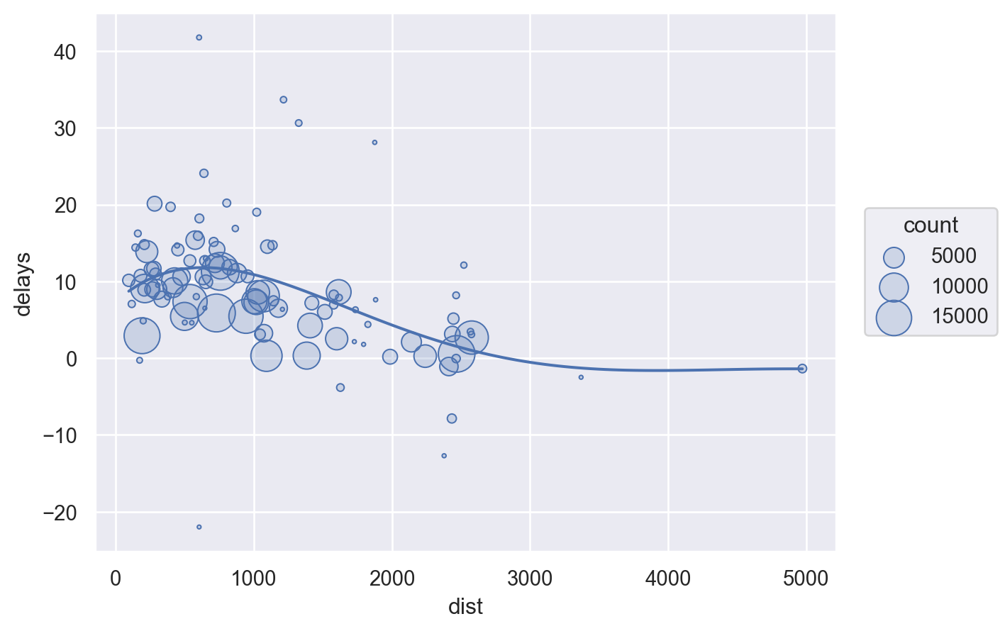
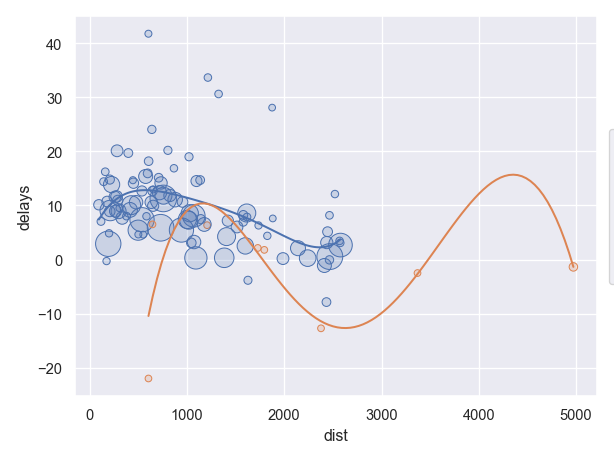
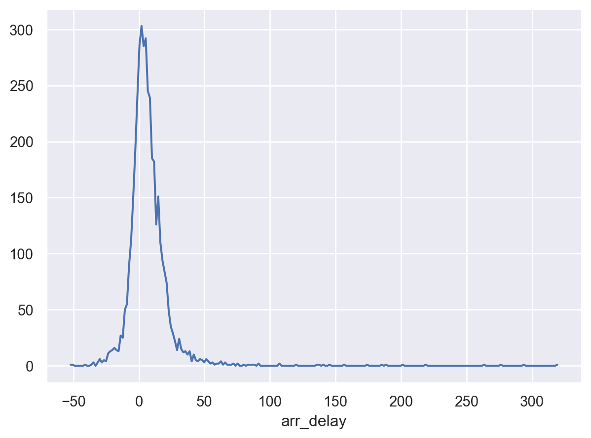
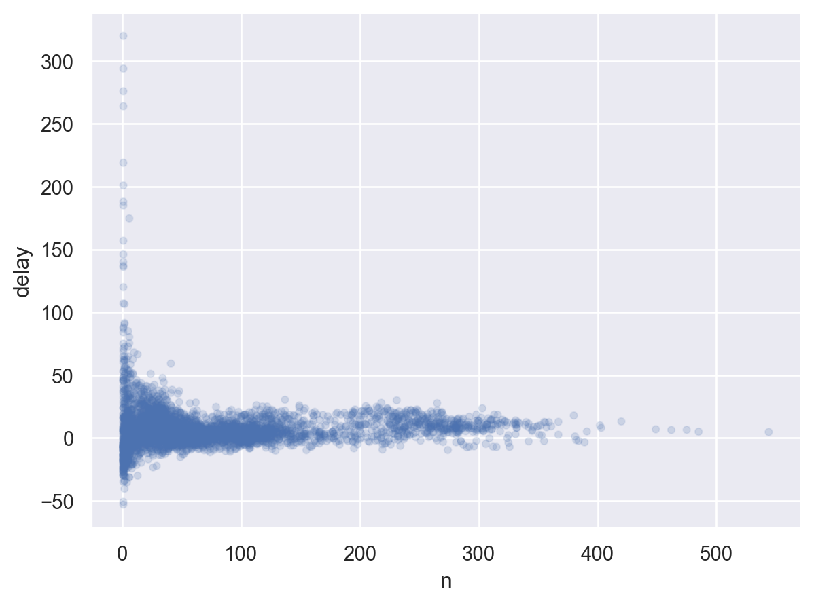
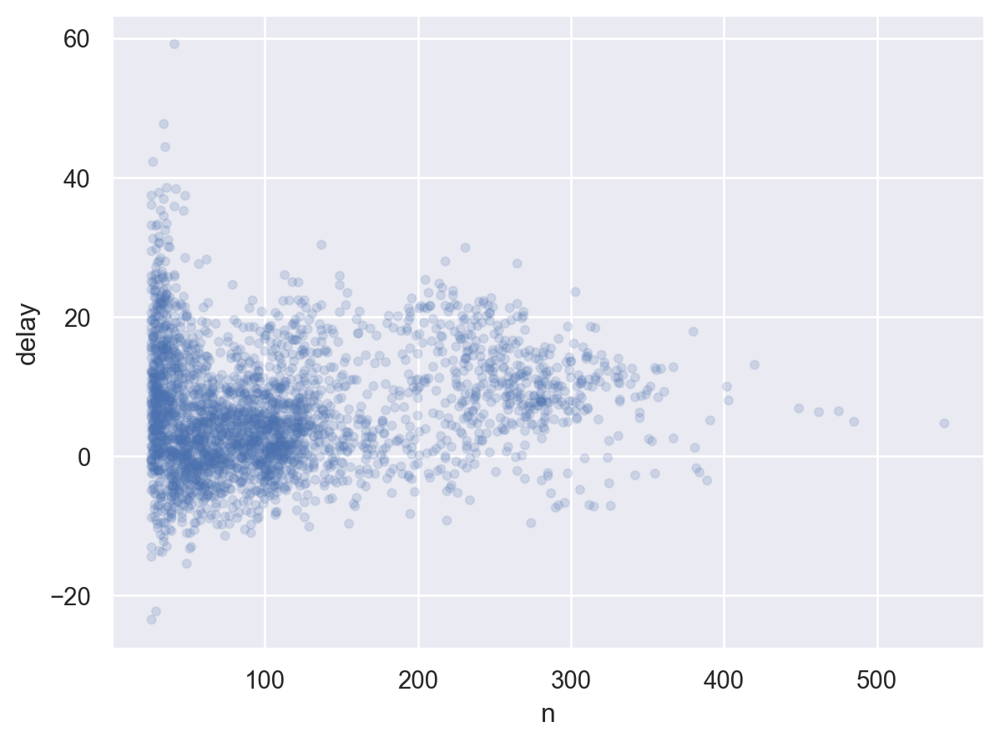
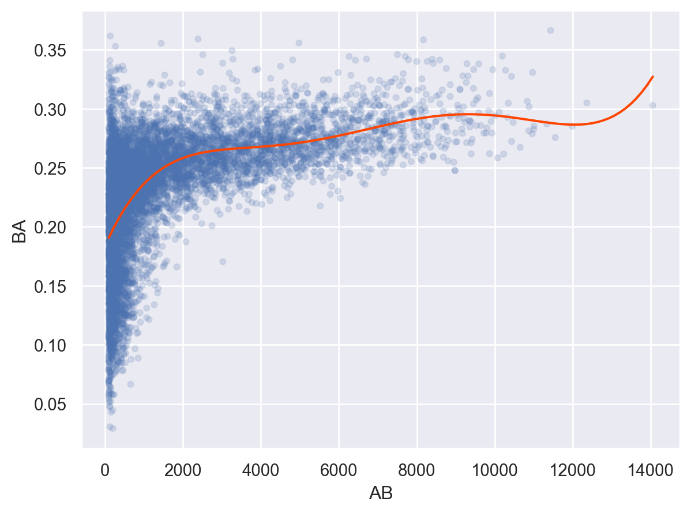

Load Packages
# numerical calculation & data frames
import numpy as np
import pandas as pd
# visualization
import matplotlib.pyplot as plt
import seaborn as sns
import seaborn.objects as so
# statistics
import statsmodels.api as smR for Data Science by Wickham & Grolemund
# numerical calculation & data frames
import numpy as np
import pandas as pd
# visualization
import matplotlib.pyplot as plt
import seaborn as sns
import seaborn.objects as so
# statistics
import statsmodels.api as sm# pandas options
pd.options.display.precision = 2
pd.options.display.float_format = '{:.2f}'.format # pd.reset_option('display.float_format')
pd.options.display.max_rows = 7
# Numpy options
np.set_printoptions(precision = 2, suppress=True)각 도착지에 따른 비행거리와 도착지연시간과의 관계를 알아보고자 함.
# Load the nycflight13 dataset
flights = sm.datasets.get_rdataset("flights", "nycflights13").data.drop(columns="time_hour")# grouping by destinations
by_dest = flights.groupby("dest")delay = by_dest[["distance", "arr_delay"]].agg(["size", "mean"])
delay.head() distance arr_delay
size mean size mean
dest
ABQ 254 1826.00 254 4.38
ACK 265 199.00 265 4.85
ALB 439 143.00 439 14.40
ANC 8 3370.00 8 -2.50
ATL 17215 757.11 17215 11.30delay.columns = ['_'.join(col_agg) for col_agg in delay.columns] # columns 이름을 새로 부여
delay.drop(columns="arr_delay_size", inplace=True) # arr_delay_count 열 삭제
delay.columns = ["count", "dist", "delays"] # rename the columns
delay.reset_index(inplace=True) # reset index (dest)delay.head() dest count dist delays
0 ABQ 254 1826.00 4.38
1 ACK 265 199.00 4.85
2 ALB 439 143.00 14.40
3 ANC 8 3370.00 -2.50
4 ATL 17215 757.11 11.30(
so.Plot(delay, x="dist", y="delays")
.add(so.Dots(), pointsize="count")
.add(so.Line(), so.PolyFit(5))
.scale(pointsize=(2, 20))
)
불필요한 자료를 제거하고 시각화하는 것이 유리
# Filter to remove noisy points and Honolulu airport
delay_sub = delay.query('count > 20 & dest != "HNL"')
(
so.Plot(delay_sub, x="dist", y="delays")
.add(so.Dots(), pointsize="count")
.add(so.Line(), so.PolyFit(5))
.scale(pointsize=(2, 20))
)
다음과 같이 제외되는 자료에 대해 label 혹은 True/False을 붙여 관리하는 것도 방법
idx = (delay["count"] > 20) & (delay["dest"] != "HNL")
delay["incl"] = np.where(idx, "out", "in") # idx가 True인 곳은 "out", False인 곳은 "in"
delay
# dest count dist delay incl
# 0 ABQ 254 1826.00 4.38 out
# 1 ACK 265 199.00 4.85 out
# 2 ALB 439 143.00 14.40 out
# 3 ANC 8 3370.00 -2.50 in
# 4 ATL 17215 757.11 11.30 out
...
# 제외되는 데이터를 같이 볼 수 있음
(
so.Plot(delay, x="dist", y="delay", color="incl")
.add(so.Dots(), pointsize="count")
.add(so.Line(), so.PolyFit(5))
.scale(pointsize=(5, 20))
)
평균적으로 가장 연착시간이 큰 항공기(tail number로 구분)를 살펴보는데,
우선, count()를 사용하여 샘플 수가 극히 작은 케이스들 혹은 극단치들을 제거해서 살펴보는 것이 유리함.
delays = flights.groupby("tailnum")[["arr_delay"]].mean() # as DataFrame
delays arr_delay
tailnum
D942DN 31.50
N0EGMQ 9.98
N10156 12.72
... ...
N998DL 16.39
N999DN 14.31
N9EAMQ 9.24
[4043 rows x 1 columns](
so.Plot(delays, x="arr_delay")
.add(so.Line(), so.Hist())
)
pandas DataFrame method
delays.hist(bins=100)300분이 넘는 delay도 있음을 보는데, 각 평균 delay값이 몇 개 항목의 평균인지 살펴보면 흥미로운 사실을 발견할 수 있음. 즉,
delays = (
flights
.groupby("tailnum")["arr_delay"]
.agg([("delay", "mean"), ("n", "count")])
)
delays delay n
tailnum
D942DN 31.50 4
N0EGMQ 9.98 352
N10156 12.72 145
... ... ...
N998DL 16.39 76
N999DN 14.31 61
N9EAMQ 9.24 238
[4043 rows x 2 columns](
so.Plot(delays, x="n", y="delay")
.add(so.Dots(alpha=.1))
)
비행횟수가 작을수록 편차가 크게 나타나는데,
일반적으로 샘플수가 클수록 평균들의 편차가 줄어드는 현상이 나타남.
위와 같은 플랏을 볼 때, 샘플 수가 매우 작은 그룹들은 제외하고 살펴보는 것이 패턴을 파악하는데 종종 도움이 됨.
간단하게, query() method를 이용하면 편리
(
so.Plot(delays.query('n > 25'), x="n", y="delay")
.add(so.Dots(alpha=.1))
)
# Lahman's Baseball Database
batting = pd.read_csv("https://raw.githubusercontent.com/beanumber/baseball_R/master/data/Batting.csv") batting playerID yearID stint teamID lgID G G_batting AB R \
0 aardsda01 2004 1 SFN NL 11 11 0.00 0.00
1 aardsda01 2006 1 CHN NL 45 43 2.00 0.00
2 aardsda01 2007 1 CHA AL 25 2 0.00 0.00
... ... ... ... ... ... ... ... ... ...
95192 zwilldu01 1914 1 CHF FL 154 154 592.00 91.00
95193 zwilldu01 1915 1 CHF FL 150 150 548.00 65.00
95194 zwilldu01 1916 1 CHN NL 35 35 53.00 4.00
H ... SB CS BB SO IBB HBP SH SF GIDP G_old
0 0.00 ... 0.00 0.00 0.00 0.00 0.00 0.00 0.00 0.00 0.00 11.00
1 0.00 ... 0.00 0.00 0.00 0.00 0.00 0.00 1.00 0.00 0.00 45.00
2 0.00 ... 0.00 0.00 0.00 0.00 0.00 0.00 0.00 0.00 0.00 2.00
... ... ... ... ... ... ... ... ... ... ... ... ...
95192 185.00 ... 21.00 NaN 46.00 68.00 NaN 1.00 10.00 NaN NaN 154.00
95193 157.00 ... 24.00 NaN 67.00 65.00 NaN 2.00 18.00 NaN NaN 150.00
95194 6.00 ... 0.00 NaN 4.00 6.00 NaN 0.00 2.00 NaN NaN 35.00
[95195 rows x 24 columns]# AB: At Bats 타석에 나선 횟수, H: Hits; times reached base 출루한 횟수
batters = batting.groupby("playerID")[["H", "AB"]].sum()
batters = batters.assign(
BA = lambda x: x.H / x.AB # BA: batting average 타율
)
batters H AB BA
playerID
aardsda01 0.00 3.00 0.00
aaronha01 3771.00 12364.00 0.30
aaronto01 216.00 944.00 0.23
... ... ... ...
zuvelpa01 109.00 491.00 0.22
zuverge01 21.00 142.00 0.15
zwilldu01 364.00 1280.00 0.28
[17661 rows x 3 columns]# filtering없이 보았을 때와 비교해서 어느 정도 제외할지 고민
(
so.Plot(batters.query('AB > 100'), x="AB", y="BA")
.add(so.Dots(alpha=.1))
.add(so.Line(color="orangered"), so.PolyFit(5))
)
# 1번 기회를 얻은 타자... 타율 100%
batters.sort_values("BA", ascending=False).head(10) H AB BA
playerID
paciojo01 3.00 3.00 1.00
gallaja01 1.00 1.00 1.00
sellsda01 1.00 1.00 1.00
... ... ... ...
kehnch01 2.00 2.00 1.00
devinha01 2.00 2.00 1.00
liddeda01 1.00 1.00 1.00
[10 rows x 3 columns]